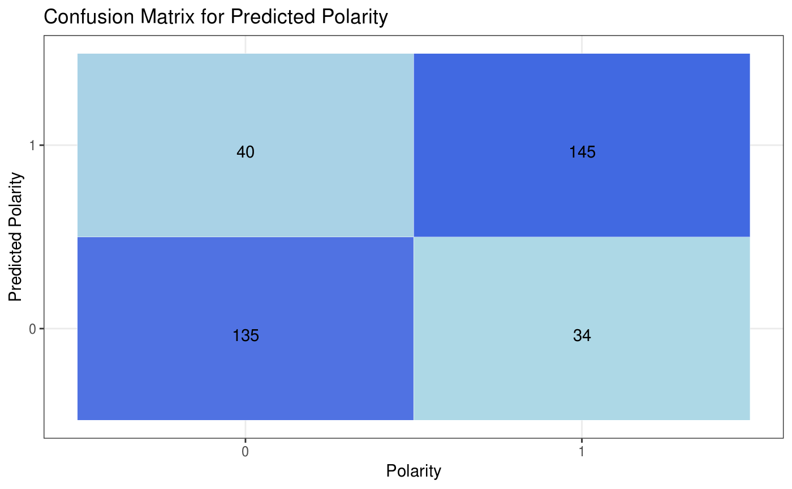

R/predict_polarity_keras.R
predict_polarity_keras.RdPredict polarity for the given dataset and filters using the pre-trained Keras LSTM model.
| data | the sentiment140 test |
|---|---|
| user_list | a vector of users for which to filter the dataset |
| start_date_time | input start_date_time in POSIXct format on which to filter the dataset |
| end_date_time | input end_date_time in POSIXct format on which to filter the dataset |
| keyword_list | a list of string keywords on which to filter the dataset |
| maxlen | Maximum length of a sequence. |
| max_words | Maximum number of words to consider using word frequency measure. |
| trained_data | Training dataset. |
| model_load_path | File path location of the trained model file. |
a list object with raw filtered dataframe, predictions dataframe that holds the predicted polarity using the model, confusion_matrix, multiple model performance statistics and a plot comparing the actual and predicted polarity.
#> $raw #> # A tibble: 354 x 14 #> polarity id date query user text nouns adjectives #> <chr> <int> <dttm> <chr> <chr> <chr> <int> <int> #> 1 Positive 217 2009-05-25 17:29:39 mcdo… Mami… mgg … 7 2 #> 2 Positive 2140 2009-05-20 02:38:17 nike Chet… ew n… 4 2 #> 3 Negative 224 2009-05-25 17:34:51 chen… QCWo… ife?… 9 3 #> 4 Positive 569 2009-06-07 21:38:16 kind… rach… @lon… 8 2 #> 5 Positive 2546 2009-06-08 00:13:48 kind… k8tb… " lo… 7 1 #> 6 Positive 1019 2009-05-11 05:21:25 lebr… unde… atch… 3 1 #> 7 Negative 2110 2009-05-18 01:14:35 Malc… blin… @por… 7 3 #> 8 Positive 256 2009-05-27 23:59:18 goog… maex… " am… 3 1 #> 9 Negative 413 2009-06-02 03:17:04 time… Jaso… " ha… 11 4 #> 10 Positive 1003 2009-05-11 03:18:59 kind… Happ… y Ki… 1 0 #> # … with 344 more rows, and 6 more variables: prepositions <int>, #> # articles <int>, pronouns <int>, verbs <int>, adverbs <int>, #> # interjections <int> #> #> $predictions #> # A tibble: 354 x 15 #> polarity id date query user text nouns adjectives #> <dbl> <int> <dttm> <chr> <chr> <chr> <int> <int> #> 1 1 217 2009-05-25 17:29:39 mcdo… Mami… mgg … 7 2 #> 2 1 2140 2009-05-20 02:38:17 nike Chet… ew n… 4 2 #> 3 0 224 2009-05-25 17:34:51 chen… QCWo… ife?… 9 3 #> 4 1 569 2009-06-07 21:38:16 kind… rach… @lon… 8 2 #> 5 1 2546 2009-06-08 00:13:48 kind… k8tb… " lo… 7 1 #> 6 1 1019 2009-05-11 05:21:25 lebr… unde… atch… 3 1 #> 7 0 2110 2009-05-18 01:14:35 Malc… blin… @por… 7 3 #> 8 1 256 2009-05-27 23:59:18 goog… maex… " am… 3 1 #> 9 0 413 2009-06-02 03:17:04 time… Jaso… " ha… 11 4 #> 10 1 1003 2009-05-11 03:18:59 kind… Happ… y Ki… 1 0 #> # … with 344 more rows, and 7 more variables: prepositions <int>, #> # articles <int>, pronouns <int>, verbs <int>, adverbs <int>, #> # interjections <int>, pred_polarity[,1] <int> #> #> $confusion_matrix #> # A tibble: 4 x 3 #> polarity pred_polarity count #> <fct> <fct> <int> #> 1 0 0 135 #> 2 0 1 40 #> 3 1 0 34 #> 4 1 1 145 #> #> $true_negative #> [1] 135 #> #> $true_positive #> [1] 145 #> #> $false_positive #> [1] 40 #> #> $false_negative #> [1] 34 #> #> $precision #> [1] 0.7837838 #> #> $recall #> [1] 0.8100559 #> #> $f1 #> [1] 0.7967033 #> #> $accuracy #> [1] 0.7909605 #> #> $plot#>